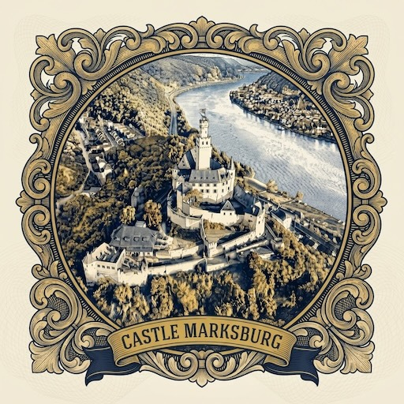

Station 3 von 16
Die einzige Burg am Mittelrhein, die nie zerstört wurde — hoch über Braubach, seit dem 12. Jahrhundert Wache haltend über den Fluss.
Dauer
12 Min
Entfernung
0,4 km
Rhine Guide

Die einzige Burg am Mittelrhein, die nie zerstört wurde — hoch über Braubach, seit dem 12. Jahrhundert Wache haltend über den Fluss.
Dauer
12 Min
Entfernung
0,4 km